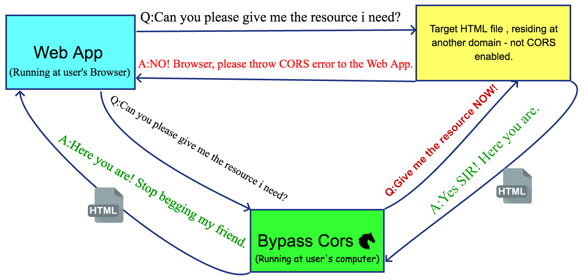
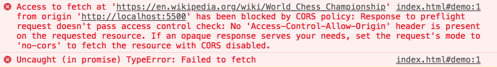
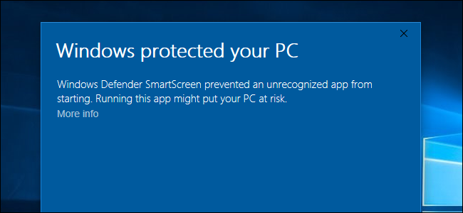
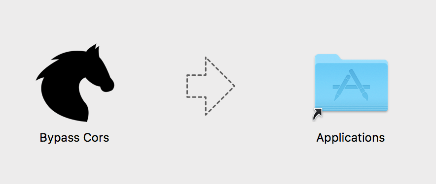

{{status}} . . .

Bypass Cors
Adding Horsepower to Web Apps!
Introduction
NEVER again let not enabled CORS domains , stand in your Web App's way to acquiring publicly available web resources !
What it does
It helps web apps running at user's browser , or any program that speaks HTTP , to fetch HTML files residing anywhere in the web , that the user's browser can navigate to.
The problem that it solves
All modern Web Browsers enforce MANY restrictions to the way a Web App that services the user, makes use of the web.
One of them is the Cross-Origin Resource Sharing (CORS) mechanism.In simple terms , CORS mechanism doesnt't allow ANY Web App to access a resource of another Domain, unless the other Domain has EXPLICITLY allowed to.
That means that despite that you , the user , have access to all the content of the web (given that you are not behind a firewall ) , the Web App that needs it to provide you with updated /currated /aggregated content from other resources , DOESN'T!
For example , if a Web App needs to display the list of all the "World Chess Champions" and issues a GET
request to "https://en.wikipedia.org/wiki/World_Chess_Championship", it will be greeted with this dreadful
error message:

Bypass Cors does what it's name says: Bypasses CORS restrictions PERMANENTLY!
Watch how this Web App (that you are viewing right now) , manages to get the HTML of the "World Chess Champions" , at the demo section.
How it works
Bypass Cors is an installable Electron App (Windows/Mac/Linux).
When it starts, it checks the status of the machine's Internet Connection, by issuing an Http GET request to "https://www.google.com".
If the machine hasn't access to the Internet, a red light and a warning message appears , telling the user to check his proxy settings / internet connection.
If everything is ok , a green light goes on. An Express Web Server begins listening for requests at "http://localhost:3167/" (user can change the port) .
The Web App can issue a POST request to this endpoint and take as a response the HTML document it wants.
The Web App can then parse the retreived HTML and extract any data it wants from it, using any HTML parser it wants.
Highlights
- Open Source!
- Free of Charge!
- Full page render & Javascript support!
- Cookie support!
- POST request support!
- Ideal for Real Time Scraping!
Installation
Step 1: Download the appropriate installer for your machine:
Step 2: Follow the instructions specific to your os :
1.Open the folder where {{windowsInstaller}} was saved. Don't try to run the installer directly from within your browser downloads section; it won't work. Double-click the file.
2.You may run into the following warning message, initiated from "Windows Defender Smartscreen" :
Click at "More info" .
When the warning message expands, click the “Run anyway” button
3.When installation completes , the "Windows Defender Firewall" will ask you to grant access to private and public networks. Tick both checkboxes.
1.Double-click the downloaded {{macInstaller}} .
2.Drag and drop the Bypass Cors icon to the Application's folder.
3.When you launch the app for the first time, you may get the message: "You cannot open an app from an unidentified developer" . To proceed, locate the installed Bypass Cors app in the Finder (under Applications Folder), right-click it and select "Open". More detailed instructions can be found here.
1. Right-Click the downloaded {{linuxInstaller}} => Properties => Permissions => Execute => Allow executing file as program => tick the checkbox.
2.Double-click the installer. You can choose to run as a standalone( no installation).
Instructions for Developers
Three steps:
- Prod your users to install Bypass Cors to their machines.
- Tell them to add your domain to Bypass Cors's '"Whitelist Domains", e.g. "https://example.com/". For the change to take effect , they have to press the "Restart Server" button.
- Issue an http POST request from your web app, to the url Bypass Cors is listening at.
Default address is http://localhost:3167/, but user can change the port. Code snippet below makes
use of the ES6 feature : property
shorthand. All variables have to be declared & assigned values , beforehand. Look up what
each variable does , at the API section.
axios.post(bypassCorsUrl,{ url,headers,cookies,post,fullPageRender,javascript,scrollInterval,debug}) .then(res => { let { html, cookies } = res.data // rest of your code here })
API
axios.post(
bypassCorsUrl, // String : REQUIRED.
// The url Bypass Cors is listening at.
// e.g. http://localhost:3167/
{
url, // String : REQUIRED
// The target url.
// e.g. https://en.wikipedia.org/wiki/World_Chess_Championship
headers, // Object : REQUIRED.
// The headers which will be used for the final
// GET/POST request to the target url.
// e.g.
// {
// "Accept": "text/html,application/xhtml+xml,application/xml;q=0.9,image/webp,image/apng,*/*;q=0.8",
// "Accept-language": "en-GB,en;q=0.9,en-US;q=0.8,el;q=0.7",
// "Accept-Encoding": "gzip,deflate",
// "cache-control": "max-age=0",
// "Host": "en.wikipedia.org",
// "Origin": "https://en.wikipedia.org",
// "upgrade-insecure-requests": "1",
// "user-agent": "Mozilla/5.0 (Windows NT 10.0; Win64; x64) AppleWebKit/537.36 (KHTML, like Gecko) Chrome/61.0.3163.100 Safari/537.36"
// }
cookies, // Array of Objects : OPTIONAL
// The cookies to be sent with the GET/POST request.
// The cookie Object can have the following pairs of keys :
// "key"/"value" or "name"/"value".
// e.g.
// [
// {
// "key": "cookie_key",
// "value": "cookie_value"
// },
// {
// "name": "cookie_key",
// "value": "cookie_value"
// },
// ....
// ]
post, // Boolean : OPTIONAL , defaults to false.
// Set this to true if you want to POST to target Url ,
// else GET request will be performed.
// e.g. true
fullPageRender, // Boolean : OPTIONAL , defaults to false.
// Cant't be combined with post : true.
// If you want to get html source after
// full page rendering, i.e. all javascript
// has been executed and all resources fetched ,
// set this to true.
// e.g. true
javascript, // String : OPTIONAL , defaults to ""
// Applied only when fullPageRender : true.
// Evals and executes the given Javascript code
// when page is fully loaded.
// Usefull when user action need's to be taken,
// before Bypass Cors retreives html to web app.
// e.g.
// `
// let button = document.querySelector('.show-more-items');
// button.click();
// `
scrollInterval, // Number : OPTIONAL , defaults to 500.
// Applied only when fullPageRender : true.
// After custom Javascript execution (if any),
// Bypass CORS scrolls down the page from top
// to bottom , at "scrollInterval" ms interval,
// in order to retrieve the real innerHTML.
// e.g. 1000
debug // Boolean : OPTIONAL , defaults to false
// Applied only when fullPageRender : true AND
// your web app is running at localhost (TEST ONLY).
// Shows the Electron Browser Window loading the page.
// You need to manually close the window,
// after execution.
// e.g. true
})
.then(res => { // here you get the requested html + cookies!
let { html, cookies } = res.data
}) Demo
To see Bypass Cors in action, you have to :
- Install Bypass Cors to your machine.
- Add the domain "https://chrishham.github.io/BypassCors/" to the "Whitelist Domains" textarea.
- Press the "Restart Server" button, for the changes to take effect.
Settings Area
HTML rendered in an iframe
An
Electron
app, created with ❤️ by Christopher Chamaletsos.
MIT license.
Hosted at  .
.